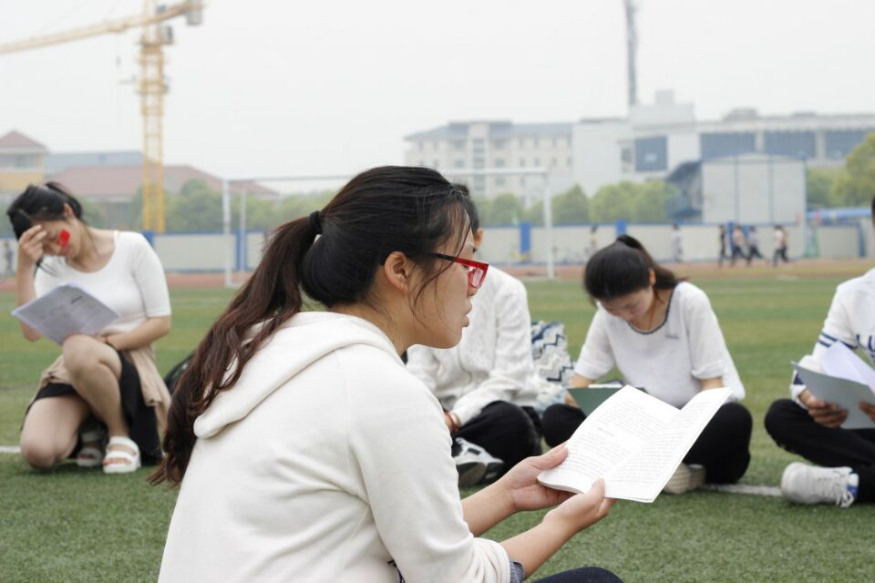
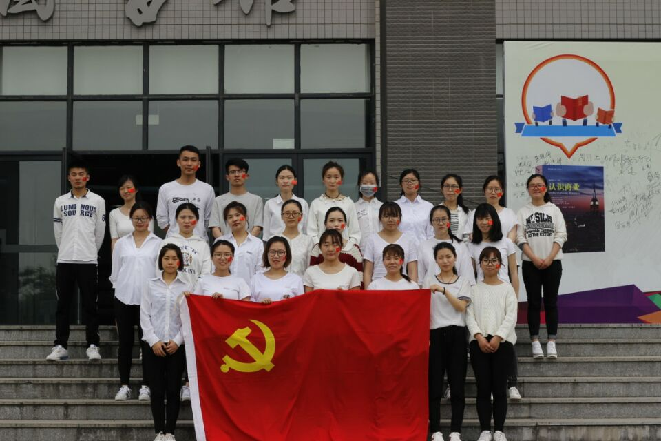

我的轨迹
童年篇
——这是一个，尚未察觉自己命运的男人的故事。
儿时的我应该还是过得很中规中矩的吧，有着爱我的父亲母亲，虽然偶尔会闹点矛盾，但总体上在一个充满爱的环境中成长起来的。
然而从小学四年级开始，却遭遇到了极其黑暗的命运。当时有个练了跆拳道后变得很能打的人，成天欺负我，随着时间的推移欺负我的人越来越多了。当时的我虽然看上去很结实，但都是挂水打得激素太多而造成虚胖。身体实际上很虚弱。打又打不过，只能终日活在校园暴力的阴影中，这样的命运一直持续到了六年级上学期。
少年篇
——这是一个，与命运持续战斗的男人的故事。
从五年级的暑假开始，我意识到人不能总是逃避，既然身体虚弱无力，那就要去锻炼。 于是从五年级的暑假开始，便进行通过节食加锻炼的减肥计划。目的是锻炼出一个足以打赢欺负我的人的身体。
六年级上学期的时候，形势逐渐发生了改变，由于锻炼身体所带来的正能量，学习成绩出现递乘式的进步，原来欺负我的人收敛了许多。但依然时不时被欺负。但是通过几个月的锻炼，我已经能够有逃跑的速度和体力了。

到了六年级下学期时，体重比开始减肥前减少了60多斤。力量得到了极大的提升。 一天，那个练跆拳道的很能打的惹我生气了，于是我就直接把他按在地上打了。他的5个帮凶过来帮忙，我利用在教室里可以通过桌子间的空隙穿插迂回的有利条件采取个个击破的方式，硬是打了十几分钟不占下风，最后在老师的调解下，双方才鸣金收兵。这一架之后，形势发生了极大的改变，这几个原来欺负我的人一半成了我的小弟，一半见我绕道走。不久之后，小学毕业了。
之后借助爷爷与校长的关系去了所很不错的初中就读，但因为基础确实不行就把学籍挂在了一所极差的初中。初中时期再次遭遇到了不输于之前黑暗的命运，这次是个扛把子，而且是个女的，没办法用暴力去制服，并且这个扛把子的号召里与震慑力还很强大，通过洗脑和强迫让几乎全班的人都敌视我。
然而越是在这种情况下，越是能看到人世间的真善美，初二时转来了一个很强势的大哥，多次怒怼欺负我的人。这着实令我感动。今年暑假时，得知他成功考取美国某大学的研究生时，我也很高兴，希望他能在美国事业有成。
与此同时，我开始化悲痛为力量，开始为了在高考时考上市里的重点高中进行各科的整备。初一时基本没怎么学习，所以需要补的地方很多，初二第一个学期，班里名次从倒数第一进步到了倒数第六。对于敌视我的人的碎语也毫无反应，久而久之，他们也觉着无聊了。于是也好好学习了。初二下学期开始，命运逐步光明化，到了初三上学期底时，原来欺负我的人已经开始有些敬佩我了，和那个欺负我的头子的关系也缓和了很多，并且由于一些机缘巧合，他们的欺凌对象转到了班上另外一个人。

到初三上学期底，学习有了突破性的进展，班级排名进步到了，倒数第26，年级排名也进到了前五分之二。自此，从总体上扭转一直以来的黑暗命运。
中考时总分考了617分，当时我报的第一批次的第一志愿是三中，分数线好像是是665，第二批次的第二志愿是三中里面的一个民办高中，分数线650多，最后我被三中录取了。并没有走任何关系，而是因为初一时学习太差，学校怕中考时影响学校名声将我的学籍挂在了一个叫启星中学的差高中。我的中考分在这所学校的排名是第一，于是便通过指标生名额能够最高降50分的政策被录取了。
到了高中后，我感受到了从未有过的幸福与快乐，周围同学都对我很好。让我认为革命已经成功，已经无需努力了。于是便逐渐地堕落了，整个高二、高三基本都在玩。高三时，觉着走艺术要求文化分低就学摄影，但最后只上了个高价的民办大专。高考前报了新东方1万多的强化班，上得也很认真，但高考英语只考30多，类似的补习班报了很多但基本没啥用。从高中报补习班和上重点高中的经历让我明白了补习班的第一目的是骗钱，学习根本还是要靠自己。
青年篇
——这是一个，即使遭到了命运背叛，仍然继续寻找自己前进道路的男人的故事。
到了大专后，一开始玩得很开心，因为有不少都是一起过来的家乡人。但玩得久了便感觉自己确实是有些在虚度生命，虽然当时玩得确实很开心，但是那样下去的未来无疑是没有希望的。于是，为了开辟出未来的另一可能性，从大专二年级上学期，便开始了共计四期，为时一年半的整备计划，目标是在转本考试时达到英语与语文的相对均势，计算机上的相对优势，使总分达到300分被南京晓庄学院文科类专业录取。（ps:后来的转本考试真的就不多不少的考了300分整。）第一期是通过大二上学期加上寒假的时间逼迫自己学习，建立起良好的作息时间和学习习惯以及转本所需的知识基础。
第二期是在大二上学期时，从上课时间，早饭前的时间等中尽可能地抽出碎片化时间进行备考，在时间上创造出优势。再加上暑假的时间使自己水平至少要能达到转上三本的程度。
第三期是在大三上学期时进一步的查漏补缺提高水平，达到能够转上二本艺术类专业的程度。
第四期是在寒假到临考前的时间里进行最后冲刺。最终达到转上二本文科类的程度转本成功开辟出未来的另一可能性。

几期整备都进行得很顺利，尤其是通过第二期的整备后进行了一次模拟考，并且把作文分往低的算，总分已经能够达到往年二本文科类的分数线了。 虽然在填报志愿之前出了些小意外去报了南晓的服装设计专业。但总体上来看确实实现了转本成功的目标，奠定了开辟未来另一可能性的基础，同时也为向web前端的战略转型埋下了伏笔。通过转本的过程，我的灵魂得以觉醒，不论什么时候，只要相信着可能性不放弃就会唤醒新的奇迹。
转本成功之后，摆在我眼前的路有三个，考研、考公务员、就业。之前一直的思路都是本科毕业后靠摄影技术和文科类专业的文凭就业的。但由于转本带来了巨大的希望让我膨胀了很多，于是毅然选择了考研，并且一开始是打算考历史系的，准备了一段时间后发觉跨专业考不是非常靠谱于是转而准备考本专业的研究生。当时的思路是朝着考研去准备先搞半个学期看看自己是否适合，准备的同时英语也能够提高，可以顺便把四级给过了。
.jpg)
开学后，遭遇到了我此生最深恶痛绝的室友，这几个室友确实已经超出了我能够相处的底线，抽烟就算了还愿开门开窗，熬夜打游戏就算了声音还这么大。给班主任反应了很多次都没用，照理说我应该把他们都给打一顿制改的，但考虑到好不容易开辟出了未来的另一可能性，打的话很有可能会有难以控制的局面并且可能会受处分。风险太大。于是便经历了有生以来最黑暗的最绝望的一段命运。几乎每天都不能睡觉，精神极度崩溃。但依然要完成每天的学习计划。学习效率不可避免地降低了很多。一个学期才背完一本中国服装史。本来以为到了下学期，他们会去实习，但由于挂得太多，他们每天需要重修，实习不了。
虽然环境很恶劣，但这并不是去堕落的理由，正因为绝望的环境，才更加需要坚定自己的道路去开辟。
怒涛篇
——这是一个，被战斗因果所支配，却将宇宙之命运钻开风洞的男人的故事。
.jpg)
寒假时，对本科第一学期进行了总结分析，得出自己继续在服装设计这条路上死拼是没有未来的。于是便通过调查和研究最终决定了去学编程。
看起来很任性，但实际上确实比搞美术靠谱些。因为很多学美术的从零开始都要搞个5年左右才能学出来。而且太需要天赋了，风险实际上很大的。但编程是属于偏理工科范畴，并不需要什么天赋，只要努力个1~2年就能学出来。于是在寒假中期便确立向IT转型的战略目标。经过一个安卓开发大佬的推荐开始接触了java，然而零基础的我学起来非常吃力，一开始连for循环，while循环都搞不清。开学后想要像之前一样从课堂抽时间学习，但这边的老师管得比较多，为了确保不挂科只好先把课堂要求的搞完了。
由于还在那个黑暗绝望的宿舍，所以学习效率依然不高。为了换宿舍我父母每天轮换着给学校老师打电话，学校这边我买了个帐篷在大厅睡装可怜，终于难得的有了良好的睡眠。最终学校中午给我换了宿舍，新的宿舍室友生活作息都很好，对人也都很不错。于是精神状态便开始恢复，学习效率也逐渐得到恢复。看python基础和算法只用了不到两周。通过之前的学习积累一些编程基础，初步了解了数据结构，之后发觉以后端语言作为切入点确实很难入门。于是便选择了前端作为切入点去突破。至此确立了web前端的发展方向。
整个2017年五月份先后看完了超文本标记语言（html）,层叠样式表（css）,javascript的基础，完成了web前端初始三件套的出装。javascript还是有点吃力的，但含金量最大的就是javascript。能否精通javascript是搞好web前端的关键。于是暑假期间在学车的间隙，通读了javascript，html5的文档，并且尝试进行开发一些web小程序。9月份开学到了学校的前三天看完了CSS3，并且在开学的第一周看完了跨平台网页开发的教程。
至此完成了前端网页开发的初步基础，在备考二级C的同时开始进行面试用个人网站的编写。通过以上的这些命运让我真正地把学习作为了一种爱好。确实到了一天不学习就难受的地步。并且每天都能有充足的睡眠，因此效率得到成倍的提高。
——这也是一个，误入歧途终于找回自我的男人的成长历程。
首页